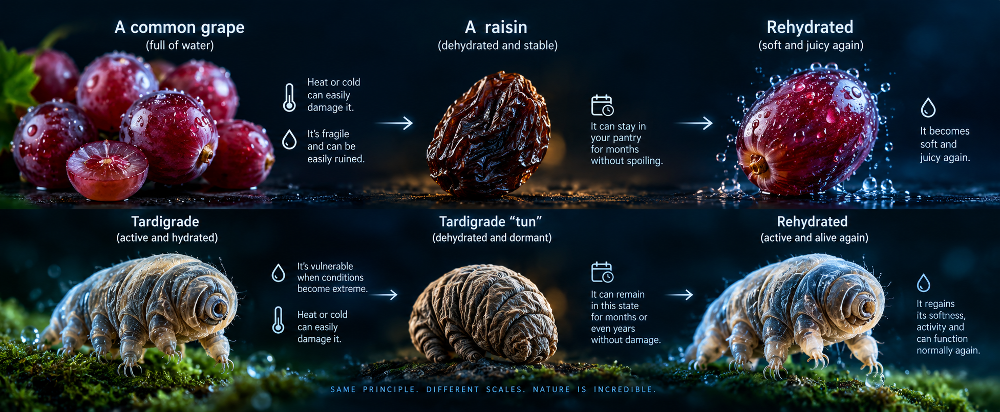

Measuring less than a millimeter in length, tardigrades (popularly known as water bears or moss piglets) are among the most resilient organisms on Earth. Found everywhere from mountaintops to deep-sea trenches, and even in backyard moss, these tiny invertebrates possess biological superpowers that baffle scientists. They can withstand conditions that would instantly kill almost any other known life form.
The Art of Suspension: The "Tun" State
How do they pull this off? When faced with extreme drought or environmental stress, tardigrades enter a remarkable dormant state of dehydration called anhydrobiosis. They expel almost all the water from their bodies, pull in their eight legs, and transform into a shrunken, barrel-like capsule known as a "tun". In this state, their metabolism drops to less than 0.1% of normal levels.
The Simple Example: The Grape and the Raisin
Think of a regular grape full of water: it is fragile and easily damaged by heat or cold. But if you dry it out into a stable raisin, it can sit in your pantry for months without spoiling. When you add water back, it plumps up again. Tardigrades do the exact same thing on a cellular level—they turn into biological "raisins" when things get tough, waiting safely until water returns.

Surviving Space and Radiation
Biologists at institutions like the University of California San Diego have discovered unique protective proteins—such as Dsup (Damage suppression protein)—that bind to the tardigrade's DNA and shield it from DNA-destroying radiation and harmful chemicals. Because of this genetic defense, experiments have shown that tardigrades can survive direct exposure to the freezing vacuum and solar radiation of outer space.
Tiny Giants of Resilience
While they look like slow, clumsy toys under a microscope, tardigrades have survived all five of Earth's mass extinction events over the last 500 million years. They remind us that nature's greatest wonders are often invisible to the naked eye.
Scientific References & Sources
- University of California San Diego (TODAY): Cracking How 'Water Bears' Survive the Extremes.
- PMC National Institutes of Health (NIH): Tardigrades and the Science of Extreme Survival.
- Wikipedia / Scientific Literature: Tardigrade Resilience and Space Exposure Data.